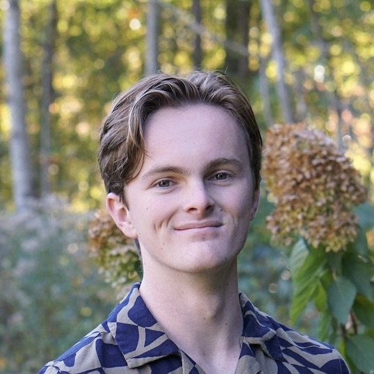

Bradley J. McGhee


Hi, I'm Bradley, an undergrad student at the Georgia Institute of Technology studying mathematics, quantum technology, and economics.
who I am
I love thinking about all sorts of problems. Particularly, I'm very interested in research in algorithms/complexity theory, combinatorics, microeconomic theory, and quantum computing. I hope to forge a long career out of thinking through problems in one of these fields.
Outside of all that, I try to get outside (to stay sane) as much as I can. I enjoy cooking, weightlifting, and making music. I sack with our hacky sack club, I play with our jazz ensemble, train with our swimming and Brazilian jiu-jitsu clubs, and best of all, I run a club that organizes intramural sports teams for every sport.
what I'm doing
In summer 2026 I interned on the quantitative research team at ICE. I spent my time there working on new strategies for risk pricing and derivatives pricing for clearinghouses.
From fall 2024 through fall 2025, I researched with the CRNCH Lab at Georgia Tech's School of Computer Science. There, my work focused on implementing quantum algorithms in the compiler for a new under-development programming language for quantum computers. I won two salary awards from the Institute to fund my work.
From summer 2023 through fall 2023, I worked with the particle theory group at Kennesaw State University. There, I was immersed in quantum field theory within and beyond the Standard Model. My work made predictions for a possible experiment at a collider based on a model for an undiscovered particle, the Z' boson.